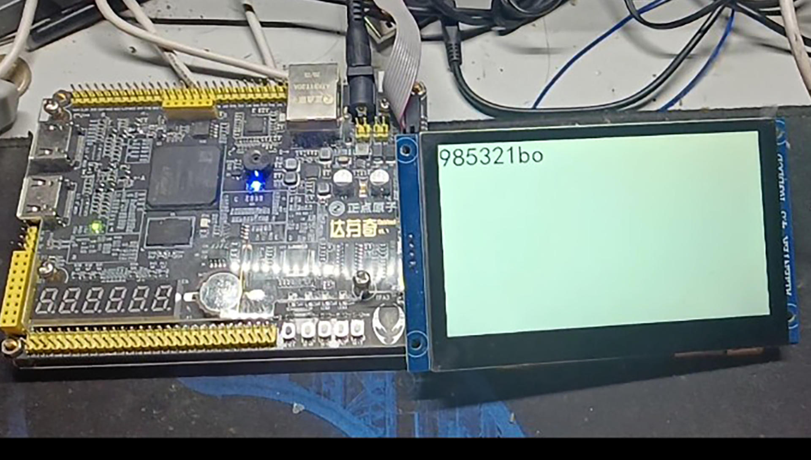

- 00 开篇词 练好基本功，优秀工程师成长第一步.md.html
- 01 CISC & RISC：从何而来，何至于此.md.html
- 02 RISC特性与发展：RISC-V凭什么成为“半导体行业的Linux”？.md.html
- 03 硬件语言筑基（一）：从硬件语言开启手写CPU之旅.md.html
- 04 硬件语言筑基（二）_ 代码是怎么生成具体电路的？.md.html
- 05 指令架构：RISC-V在CPU设计上到底有哪些优势？.md.html
- 06 手写CPU（一）：迷你CPU架构设计与取指令实现.md.html
- 07 手写CPU（二）：如何实现指令译码模块？.md.html
- 08 手写CPU（三）：如何实现指令执行模块？.md.html
- 09 手写CPU（四）：如何实现CPU流水线的访存阶段？.md.html
- 10 手写CPU（五）：CPU流水线的写回模块如何实现？.md.html
- 11 手写CPU（六）：如何让我们的CPU跑起来？.md.html
- 12 QEMU：支持RISC-V的QEMU如何构建？.md.html
- 13 小试牛刀：跑通RISC-V平台的Hello World程序.md.html
- 14 走进C语言：高级语言怎样抽象执行逻辑？.md.html
- 15 C与汇编：揭秘C语言编译器的“搬砖”日常.md.html
- 16 RISC-V指令精讲（一）：算术指令实现与调试.md.html
- 17 RISC-V指令精讲（二）：算术指令实现与调试.md.html
- 18 RISC-V指令精讲（三）：跳转指令实现与调试.md.html
- 19 RISC-V指令精讲（四）：跳转指令实现与调试.md.html
- 20 RISC-V指令精讲（五）：原子指令实现与调试.md.html
- 21 RISC-V指令精讲（六）：加载指令实现与调试.md.html
- 22 RISC-V指令精讲（七）：访存指令实现与调试.md.html
- 23 内存地址空间：程序中地址的三种产生方式.md.html
- 24 虚实结合：虚拟内存和物理内存.md.html
- 25 堆&栈：堆与栈的区别和应用.md.html
- 26 延迟分配：提高内存利用率的三种机制.md.html
- 27 应用内存管理：Linux的应用与内存管理.md.html
- 28 进程调度：应用为什么能并行执行？.md.html
- 29 应用间通信（一）：详解Linux进程IPC.md.html
- 30 应用间通信（二）：详解Linux进程IPC.md.html
- 31 外设通信：IO Cache与IO调度.md.html
- 32 IO管理：Linux如何管理多个外设？.md.html
- 33 lotop与lostat命令：聊聊命令背后的故事与工作原理.md.html
- 34 文件仓库：初识文件与文件系统.md.html
- 35 Linux文件系统（一）：Linux如何存放文件？.md.html
- 36 Linux文件系统（二）：Linux如何存放文件？.md.html
- 37 浏览器原理（一）：浏览器为什么要用多进程模型？.md.html
- 38 浏览器原理（二）：浏览器进程通信与网络渲染详解.md.html
- 39 源码解读：V8 执行 JS 代码的全过程.md.html
- 40 内功心法（一）：内核和后端通用的设计思想有哪些？.md.html
- 41 内功心法（二）：内核和后端通用的设计思想有哪些？.md.html
- 42 性能调优：性能调优工具eBPF和调优方法.md.html
- 先睹为快：迷你CPU项目效果演示.md.html
- 加餐01 云计算基础：自己动手搭建一款IAAS虚拟化平台.md.html
- 加餐02 学习攻略（一）：大数据&云计算，究竟怎么学？.md.html
- 加餐03 学习攻略（二）：大数据&云计算，究竟怎么学？.md.html
- 加餐04 谈谈容器云与和CaaS平台.md.html
- 加餐05 分布式微服务与智能SaaS.md.html
- 国庆策划01 知识挑战赛：检验一下学习成果吧！.md.html
- 国庆策划02 来自课代表的学习锦囊.md.html
- 国庆策划03 揭秘代码优化操作和栈保护机制.md.html
- 温故知新 思考题参考答案（一）.md.html
- 用户故事 我是怎样学习Verilog的？.md.html
- 结束语 心若有所向往，何惧道阻且长.md.html
- 捐赠
国庆策划02 来自课代表的学习锦囊
你好，我是课程编辑小新。
这里是国庆特别策划的第二期，我特意邀请了两位“课代表”来分享一下他们学习方法。
第一位靳同学目前在中科院研究所实习。特别巧的是，第二季的课程我们选择了RISC-V体系结构，而他之前就做过一个RISC-V处理器。
第二位是青玉白露同学，他也是两季课程的老粉丝了，今年5月份的时候他在忙活面试，但还是抽出时间参与了第二季专栏目录的调研反馈。另外，听说国庆期间他的flag，要是把前面更新的课都看完。
借此机会，也感谢这两位同学的积极参与，还有其他更多没“出镜”的潜水同学，也谢谢你们对这门课程的建议和支持。接下来，我们就听听“课代表”们的分享吧。
@靳同学
你好，我是靳培泽。
作为一名本科应届毕业生，现在我在中国科学院计算技术研究所的一个项目组中实习。
在之前的课程群中，我得知彭老师的课程要“进军”RISC-V处理器设计，知道以后我很兴奋，因为那时我正在参加中国科学院大学的“一生一芯”培养计划，已经完成了当初的第一个“玩具”处理器。
我之前做的RISC-V处理器
我做的是一个普通的五级流水CPU，实现了所有RV64I指令并且能够上板运行交叉编译后的小程序（编译出来的结果一定要看看，不然有可能会编译出不支持的指令）。同时，我还为我的小CPU“量身定做”了一个LCD显示屏模块，小CPU采用MMIO方式通过DMEM直接访问显存，在显示屏打印某些字符。这是突发奇想的一个实现，还是挺有趣的。

本来我还打算与一位擅长游戏开发的朋友合作，进行一些小扩展，例如我向他提供库函数，让他来编写游戏。可惜到最后临近毕业，也没有能实现这个想法。
虽然我的这次项目代码量相当少，并且没有涉及到任何高级体系结构方面的实现，但是它为我现在正在进行的、更深入的工作提供了很扎实的知识。值得一提的是，这次开发过程中我采用的difftest差分测试，极大地提升了我的debug效率，感兴趣的朋友们可以去了解一下相关内容。
通过整个项目，我直接体会到使用RISC-V设计处理器有多么简洁，我相信这样的开源指令集也会在工业界和学术界一年比一年火爆。但现在大部分人对它还没太多了解，所以，我也想借这次机会为RISC-V的推广尽一份绵薄之力。于是，我就联系编辑，想看看有没有什么能帮上忙的，也对彭老师的教学内容和计划有了一定的了解。
学习经验
这次很高兴能收到邀请，分享一些我在设计或者学习过程中的“踩坑”经验，希望对你有启发。
在理论学习过程中，碰到问题是一件在所难免的事。我在“一生一芯”学习期间有个比较重要的感受就是，我们首先应当学习的是如何获取知识的知识。听着是不是有点像绕口令？说简单点就是学习获取知识的方法。这方面我在下面贴一个链接，各位可以去观赏观赏。
第一个链接是提问的智慧，当时一经发出就被奉为经典，详细描述了提问的人事前应该做好什么，以及不该做什么。第二个是“一生一芯”的提问模板。
我的另一条经验就是理论和实践是一体两面，两者都重要。哪怕你觉得已经把理论全搞明白了，到了实践环节（coding）还是会出各种问题。
不过，不知道你是不是也有这样的体会：实践之前最折磨人的环节，就是花一段比较长的时间学理论。除非你积累足够深，不然想快速突击学几天就进入敲代码环节几乎不可能。
举个cache实现的例子。先从理论部分聊起，教科书上通常都是一些老生常谈的描述：
- 地址映射方式包括直接映射、多路组相联、全相联；
- write through和write back方法；
- write allocate和no write allocate方法；
- ……
知道了这些？就能立刻进行代码实践了么？答案是否定的。因为理论里“隐藏了”非常非常多的细节部分，而这些细节涉及到你实践环节是顺利跑通还是举步维艰。只停留在教科书理论，没有进行自主思考和探索，是无法进行实践的。
那怎么判断自己掌握的知识够不够呢？还是接着用cache实现为例，我们把要实现什么描述得再具体一些：假设我们现在要开始实现一个四路组相联，一个cacheline为16B的4KB instruction cache。你可以想一想，前面列的那些知识点你掌握了，足够么？
显然还不够，所以我罗列了一系列问题，这些问题都是在实现cache过程中101%会碰到的，我们需要考虑清楚的问题，也邀请你试着回答一下：
- 主存和icache的交互单位最小是多少？
- 更新主存时采用write back，还是write through?
- 如果采用write back，那么需要对每个理论上的line进行怎样的改造？实现这种改造需要多少多余的bit？
- 当cache读miss时，也就是在我们必须通过总线访问主存时，CPU应该进行什么样的行为？在cache读取回miss的line后应该怎么办？是使用read allocate还是read through？
- 如果使用read allocate的话，应该如何定位到该被替换的cacheline？如何决定替换哪一组的哪一个cacheline？
- 替换成功后，CPU应该进行什么样的行为？
并不是前面的理论学习不重要，而是我们通过理论学习环节，对某个知识有了全局把握以后，还要结合更实际的问题来挑战自己，并且在摸索实现的过程里，把局部、具体的细节一一攻破。这些细节可能很散，不比我们学理论需要的耐心少。但经历了这个环节，你才能真正在理论学习的基础上迈出下一步，拿出实践结果，从而在学习和工作里更快地成长。
最后，我想说的是，虽然我们有时在某种程度上只是被动去学习，但是我们也可以换个角度，主动给自己“出题”，驱动自己主动分析、解决问题，类似于“解谜游戏”一样。在我眼中，计算机领域具有它自己的独特魅力，出于兴趣的缘故，我以后也打算在计算机体系结构领域一直探索。
这次的分享就到这里，希望我们都能在学完这门课程后，跟着LMOS精进自身的技术功力，一起加油。
@青玉白露
你好，我是青玉白露，现在是在字节跳动做后端，今年校招刚入职。
作为彭东第一季课程的忠实“粉丝”，第二季我上线的时候就入手了。编辑听说我国庆准备把目前更新的课程都学完，邀请我分享自己的学习体会，这里我就简单聊聊我的收获和方法。
学习收获
如果用一句话概括彭东老师这门课给我带来的收获，那就只能是：能让我把计算机体系从上到下、里里外外的脉络都了然于胸。
现代计算机体系无非是硬件与软件的结合：硬件提供高效的计算能力、存储能力；而软件则是各种应用，如操作系统、影音软件、游戏、工程软件等等。
那么，两者分别是怎么实现的？又是通过什么联系在一起的呢？这门课给了我答案。
硬件，其实就是由各种基础元器件所构成的总和。理论上来说，所有的电路都可以通过直接画图的方式来表达，但是对于复杂电路就无能为力了，而Verilog语言则是让我们能够以编码的方式对电路进行抽象，让计算机来进行处理，生成我们所需要的电路。
软件，归根结底是依托于硬件所提供的各种“指令”，这些指令，就像是一个个不同的功能开关。软件基于这些功能开关，就能实现人们所想要的功能。至于机器语言、汇编语言、高级语言等等，也仅仅是指令不同层级的表述而已，一通百通，不外如是。
说得更具体一些，就拿前面手写CPU这个章节来说，我学到了怎么通过Verilog语言来编写CPU，头一次站在“CPU设计者”的视角上观察CPU是怎么工作的，还知道了怎么基于我所写的CPU实现一些简单的功能……
学习方法
归纳一下我的学习方法，可以概括成三个关键词：兴趣为王、辐射四周、以点带面。
兴趣为王很好理解。不管学习什么知识，兴趣是必不可少的东西，它是让你在学习过程中遇到问题还能继续坚持的动力。如果有兴趣，那就好好学；如果没有兴趣，多想想诗与远方，人不可能原地踏步，必须一往无前。
而辐射四周的意思是基于课程提供的知识和线索，自己再做些额外扩展。在学习过程中，我会尽可能了解所学知识所涉及到的东西，有些东西课程里没讲，但基于好奇心我会记录下来当时的疑问，之后自己去探索。
举个例子，在学习手写CPU的章节过程中，我比较好奇的是CPU的基础硬件是怎么实现的？为此，我找到英特尔的介绍文档，了解到了从沙子到CPU最终成型的过程；我觉得对这个成形过程还不够了解，于是又回过头去看了电子管到晶体管的演变，数电和模电……
最后一招就是以点带面。学海无涯，但时间是有限的，我们的精力是有限的。虽然我说了可以通过辐射四周来扩展知识面，但这并不意味着我们需要方方面面都刨根究底，只需要把握一个大致的脉络即可。之后的某天，当你工作需要的时候，回过头来再去深究也不迟。沿着这个思路，我会把课程里一些关键的要点记录下来，成为日后深入探索的“索引。”
学习资料
最后给你列了一些我自己感觉不错的学习资料，供你参考：
无论是学生时代，还是现在的工作中，我越来越觉得计算机学科的未来永无止境。漫漫征途中，很高兴能通过这门课程跟彭东老师结缘，跟优秀的同学们结缘。希望我的分享对你也有帮助，我们一起加油。
课代表分享的全部内容就是这些，也欢迎你留言区，聊聊自己的学习方法或者课程收获。
© 2019 - 2023 Liangliang Lee. Powered by gin and hexo-theme-book.